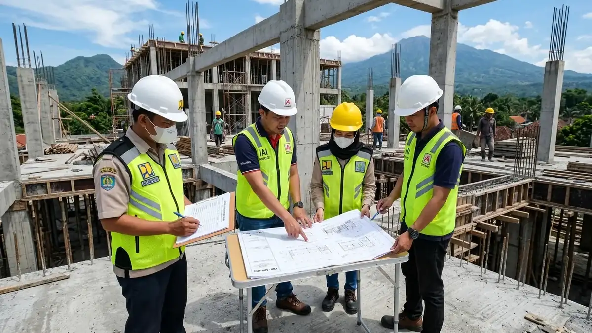

Ringkasan Inti
- Legalitas bangunan yang lengkap mencakup dokumen PBG yang diterbitkan melalui portal SIMBG sebelum pekerjaan fisik konstruksi dimulai di wilayah Malang.
- Konstruksi tanpa PBG berisiko dikenakan sanksi administratif bertahap oleh pemerintah daerah, mulai dari peringatan tertulis, penyegelan, hingga pembongkaran.
- Status legalitas yang tidak lengkap dapat menghambat transaksi jual beli, appraisal perbankan, dan pengajuan kredit agunan properti di masa depan.
- Pemulihan status legalitas bangunan eksisting membutuhkan proses As-Built Drawing dan sertifikasi keahlian arsitek yang biayanya jauh lebih besar dibanding pengurusan awal.
Daftar Isi Artikel
Dalam lanskap pembangunan modern di Kota maupun Kabupaten Malang, kepatuhan hukum menjadi parameter krusial yang tidak boleh diabaikan oleh setiap pemilik properti. Mengacu pada Peraturan Pemerintah Nomor 16 Tahun 2021 tentang Bangunan Gedung, setiap pendirian bangunan baru, renovasi struktural, hingga perluasan wajib mengantongi Persetujuan Bangunan Gedung (PBG). Menjalankan proyek tanpa PBG bukan hanya sekadar kelalaian administratif, melainkan ancaman nyata terhadap kelangsungan aset properti Anda.
1. Apa yang Dimaksud dengan Legalitas Bangunan yang Lengkap?
Legalitas bangunan yang lengkap merujuk pada pemenuhan seluruh instrumen hukum dan dokumen teknis yang dipersyaratkan oleh pemerintah daerah setempat sebelum dan setelah proses konstruksi terlaksana. Di wilayah Malang Raya, standar kelengkapan legalitas meliputi:
- Bukti Kepemilikan Lahan yang Sah: Sertifikat Hak Milik (SHM) atau Sertifikat Hak Guna Bangunan (SHGB) yang bebas sengketa dan telah terdaftar di kantor pertanahan ATR/BPN.
- Kesesuaian Tata Ruang (KRK / ITR): Keterangan Rencana Kota yang mengatur garis sempadan bangunan (GSB), koefisien dasar bangunan (KDB), serta peruntukan lahan sesuai RTRW Kota/Kabupaten Malang.
- Dokumen Rencana Teknis DED: Gambar perencanaan arsitektur, gambar rekayasa struktur tahan gempa, dan instalasi mekanikal-elektrikal yang disahkan oleh tenaga ahli berlisensi STRA IAI.
- Persetujuan Bangunan Gedung (PBG): Dokumen resmi izin pelaksanaan konstruksi yang diterbitkan oleh Dinas Penanaman Modal dan Pelayanan Terpadu Satu Pintu (DPMPTSP) melalui portal SIMBG.
- Sertifikat Laik Fungsi (SLF): Pengakuan kelaikan teknis yang diterbitkan setelah konstruksi rampung dan diinspeksi oleh pengawas bersertifikat.

2. Apa yang Terjadi Jika Konstruksi Berjalan Tanpa PBG?
Ketika aktivitas pembangunan berjalan di lapangan tanpa mengantongi dokumen PBG, instansi pengawas tata ruang dan Satpol PP memiliki wewenang hukum untuk menindak pelanggaran tersebut secara bertahap:
- Peringatan Tertulis: Dinas PUPR atau Satpol PP akan melayangkan surat peringatan pertama hingga ketiga kepada pemilik bangunan untuk segera menghentikan aktivitas dan melengkapi berkas izin.
- Penyegelan dan Penghentian Sementara: Pemasangan garis pengaman atau stiker segel merah di lokasi proyek, yang membekukan seluruh pekerjaan tukang hingga denda dan perizinan diproses.
- Pengenaan Denda Administratif: Berdasarkan peraturan daerah Kota Malang dan PP 16/2021, pemilik bangunan dapat dikenakan denda hingga 10% dari nilai total bangunan yang sedang dikerjakan.
- Perintah Pembongkaran Bangunan: Diterapkan apabila bangunan terbukti melanggar sempadan jalan utama, menutup sempadan sungai, atau tidak memenuhi kriteria keselamatan konstruksi gempa.
Catatan Arsitek Malang
Mengurus PBG sejak fase desain awal bersama tim arsitek kami jauh lebih murah dan efisien dibanding menghadapi penyegelan proyek di tengah jalan. Penundaan konstruksi akibat segel dinas dapat menimbulkan kerugian upah tukang harian, kerusakan material basah di lapangan, dan denda retribusi yang berlipat ganda.
3. Bagaimana Cara Memulihkan Status Legalitas Bangunan yang Bermasalah?
Bagi bangunan eksisting yang terlanjur berdiri tanpa PBG atau sedang terkena sanksi administratif, pemulihan status legalitas tetap dapat dilakukan melalui mekanisme pendaftaran bangunan eksisting di portal SIMBG. Langkah pemulihan yang harus ditempuh meliputi:
- Audit Teknis dan As-Built Drawing: Melibatkan arsitek berlisensi untuk mengukur ulang fisik bangunan eksisting dan menggambar ulang cetak biru arsitektur, denah, tampak, potongan, dan instalasi mekanikal.
- Kajian Keandalan Struktur: Pengujian mutu beton (hammer test atau core drill) dan pemindaian penulangan besi oleh ahli teknik sipil untuk membuktikan bahwa bangunan aman dihuni.
- Sidang Konsultasi TPA/TPT: Menghadiri sidang bersama Tim Penilai Teknis Dinas PUPR guna mempertanggungjawabkan kelayakan teknis fisik bangunan yang sudah berdiri.
- Pembayaran Retribusi dan Denda Kompensasi: Menyelesaikan kewajiban pembayaran retribusi daerah melalui Bank Jatim sebelum dokumen PBG dan SLF diterbitkan secara sah.
4. FAQ (Pertanyaan Sering Diajukan)
Apakah semua bangunan tanpa PBG otomatis akan dibongkar?
Tidak serta merta langsung dibongkar. Pembongkaran paksa oleh Satpol PP dan Dinas PUPR merupakan opsi sanksi terakhir setelah tahapan teguran tertulis, penghentian sementara pekerjaan, dan denda administratif diabaikan oleh pemilik bangunan.
Apakah proses pemutihan PBG berlaku untuk semua jenis bangunan?
Ketentuan penyesuaian atau pemutihan PBG bergantung pada fungsi bangunan dan kesesuaian zonasi tata ruang (Keterangan Rencana Kota). Bangunan yang melanggar Garis Sempadan Bangunan (GSB) fatal atau berdiri di zona lindung hijau tidak dapat diputihkan.
Berapa lama proses pemulihan legalitas bangunan yang bermasalah?
Durasi pemulihan berkisar antara 1 hingga 3 bulan tergantung kelengkapan berkas kepemilikan tanah, kompleksitas pembuatan gambar As-Built Drawing oleh arsitek berlisensi STRA, serta jadwal sidang teknis Tim Profesi Ahli (TPA) Pemkot atau Pemkab Malang.
Konsultasikan Legalitas PBG Bangunan Anda di Malang
Dampingi proyek Anda bersama konsultan perizinan dan arsitek berlisensi STRA IAI resmi agar terhindar dari sanksi dinas dan risiko hukum.

Muhammad Musyaffa
Penulis & Tim Riset Arsitektur Maroon Arsitek Malang, spesialis regulasi legalitas PBG/SIMBG, pemenuhan standar tata ruang perizinan, dan Sertifikat Laik Fungsi (SLF).